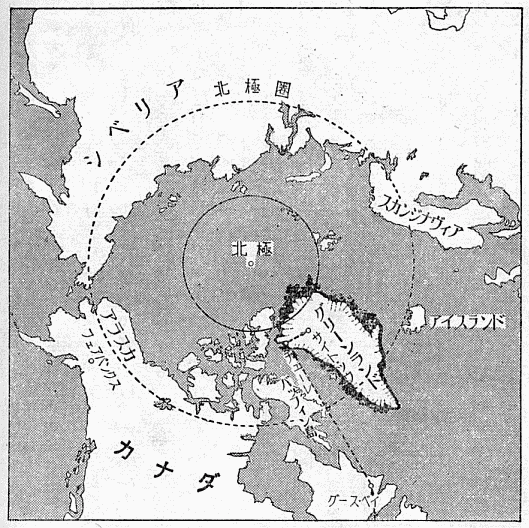

ハワイ島の高峰マウナ・ロアは、一万三千七百フィートの山頂を中心にして、神奈川県よりも一周り広い全地域が、黒い熔岩で
ところが、ちょうどこれと対照する白い月の世界も、この地球上にある。それはグリーンランドの氷冠（アイス・キャップ）の上の景観である。氷冠というのは、太古から降りつもった雪が解けないで、次第に積み重なり、自重のために氷化したもののことである。平らな土地にできた、動かない氷河と思えば、まずまちがいない。
グリーンランドは、島としては、世界でいちばん大きい島であって、南極大陸を除いては、いちばん極に近い陸地である。面積は二百十四万平方キロで、現在の日本の全領土の六倍半ある。所属はデンマークであるが、このとほうもなく広い土地に、人間は二万三千人くらいしか住んでいない。その大部分は、エスキモー人である。
日本の六倍半の土地に、人間が二万三千人といえば、ほとんど無人に近いといってよい。事実、グリーンランドの大部分は、氷冠に蔽われていて、この氷冠の上は、全くの無人の世界である。無人の世界というよりも、これはまったく生命のない世界といったほうがよい。グリーンランドの地図を見ると、海岸に沿ったごく狭い地域だけに色が塗ってあって、内部は真白になっている。この白く残されたところが氷冠であって、少なくも日本領土の六倍はある。そしてそこにあるものは、雪と氷だけであって、木もなければ、岩も見られない。要するに黒いものは、何ひとつない世界である。
さらに驚くべきことは、この氷冠の氷の厚さである。氷冠の標高は、大略ながらほとんど全土にわたって測られているが、いちばん高いところは、一万一千フィートを越え、平均して、約七千フィートである。ところで氷冠の厚さを、地下探鉱によく用いられる人工地震波で測ってみると、厚さは大体標高に近いか、あるいはそれよりも少し大きい値に出る。氷の底は、海面に近いか、あるいは海面下である。それでグリーンランドの氷冠は、ひと口にいえば、だいたい日本アルプスくらいの厚さで、日本全土の約六倍の大きさの氷の鏡餅と思ってよい。要するにとほうもないものである。
氷冠の上には生命がないといったが、それも当然である。草や木が生えようと思ったら、氷の中に長さ七千フィートの根をおろさねば下の土にはとどかない。木も草も生えない土地には、昆虫もすめないし、したがって鳥も獣も生きては行かれない。要するに、雪と氷だけしかないのである。氷の中に、
氷冠の厚さが、それほど厚いというのは、なにかのまちがいではないかと、思われる方があるかもしれない。しかし南極大陸にも、同じような氷があることが、ごく最近わかった。バートランドはアメリカの基地の一つで、南極圏と極地点とのほぼ中間ぐらいにある。そこで人工地震波を用いて、氷の厚さを測ったら、約一万フィートという値が出た。今度の地球観測年の一つの収穫である。ところがバートランドの標高は、わずか五千フィートくらいにすぎない。それで氷の底は海面下五千フィートにまで達していることになる。
ところが、さらに驚くべきことには、南極点をはさんで、バートランドの反対側に、ソ連の基地があるが、そこでも、氷の厚さを測ってみたら、一万フィート近い値が得られた。これがほんとうなら、南極大陸は一つの大陸ではないことになる。従来からも、南極大陸は、二つの大陸からできているという説もあったが、あるいはそういうことになるかもしれない。
グリーンランドの場合は、内陸の大部分が、海面以下にあるらしい、ということになっている。海岸に沿った狭い地域だけには、いわゆる海岸山脈が、ずっと島をとりまいている。これは古い地質の岩山であって、もちろん木も草もなく、いかにも万古の氷雪で削られたような裸の岩肌を見せている。大部分は、千フィートから二千フィート程度の岩山であって、これは確かに海面上に出ている。
それでは、もしこの氷冠の氷が、ぜんぶ融けたら、グリーンランドは、周辺だけが環になって残り、内部は浅瀬になってしまいそうである。珊瑚礁の一種に、環礁というのがあるが、ちょうどあれと同じようなことになりそうである。
しかしこれには異論があって、もし氷がぜんぶ融けたら、グリーンランドの内陸は、浮き上ってくるだろうとも考えられる。平均高度七千フィートの氷といえば、たいへんな重量である。これだけの重量が、何百万年もかかっていれば、陸地はその重みで沈んでしまう。しかしその荷重がとれればまた浮いてくるとも考えられる。大地などといっても、あんがいたよりないもので、
近代になって、氷河が後退し始めたというのは、スカンジナヴィアだけにかぎった話ではない。アルプスの氷河も、どんどん後退している。アルプスで、氷河を真正面に眺める景色のよいところを選んで、五十年前に建てたホテルがある。しかし今では、そのホテルからは、氷河が見られないという話である。まさに営業妨害の気候変化である。
グリーンランドの氷冠も、その周辺が、認め得るくらいの速さで後退しているそうである。米国では、私が前に手伝っていた、雪氷永久凍土研究所が主体になって、四年前から、毎夏グリーンランドへ遠征隊を出している。今年は五度めである。その連中の話では、わずかこの五年間でも、氷冠の後退が、十分認められるということであった。
今年の夏は、とくに氷冠の融けかたが著しかった。私が着いたのは、六月の末であって、間もなく激しい融解が始まった。しばらく氷冠の末端に近いところにいたので、とくに目だったのであるが、氷原の上に、雪解水の川が無数にできて、もの
地球の気温が、今世紀にはいってから、次第に上昇してきたことは事実である。北海道などでも、前から住んでいる老人は、よく昔はもっと寒くて、雪が多かったという話をする。札幌の中心地、大通りの真中で遭難した人があった、などという話も出る。話半分としても、気温がだんだん上昇していることはほんとうらしい。
アメリカでも、この点が問題になって、気象台の手で、全国の測候所の気温を、過去六十年間に
ここで問題は二つにわかれる。地球上の気温は、過去においても、週期的に変化している。いわゆる氷河期が、何回もくり返して襲来してきたのは、このためである。しかしそういう大変動のほかに、もっと週期の短い、そして変化量の少ない変動もあった。たとえば数百年程度の週期で、気温が少しあがったり、さがったりするという変化である。ところで、今世紀にはいってからの気温上昇が、この変化の波の一部であれば、なにも問題は起らない。もう半世紀も待っていれば、また寒い時期がやってくるであろう。
ところが、少し
大気中の炭酸ガスの含有量が殖えれば、太陽の輻射線をよけいに吸収するので、地球の温度はのぼることになる。それで近年の気温上昇は、大気中の炭酸ガスの増加によるもので、この炭酸ガスの増加には、たぶんに人為的要素があるのではないかという問題が出てくる。もしそれだったら、これはまことに厄介な話で、燃料の消費は今後も増すばかりであるから、気温は上昇をつづけるものと思わねばならない。
それでいったい、大気中の炭酸ガスの量が近年になって殖えているかどうかがまず問題である。これは局地的な影響が強いので、なかなかはっきりした結論はくだしにくいが、この方面の専門家ユンゲ博士の話では、過去五十年間に、大気中の炭酸ガスは、一〇パーセント殖えているということである。もっともそれが事実としても、それが人為的なことに起因しているか否かは、別の問題である。海水は炭酸ガスをよく溶かすので、海水中の炭酸ガスの量をよく調べてみなければ、なんともいえない。しかしいずれにしても、これは気象学および海洋学上の立場から、大いに研究を必要とする問題である。というのは、気温がこの調子でどんどん上昇をつづけたら、たいへんなことが起るからである。
原因はいずれにしても、もし現在の割合で、あと五十年間気温が昇りつづけたら、北氷洋の流氷が、夏の間は大部分融けて、船がかなり楽に通れるようになるであろうと言っている学者もある。そのほうは結構であるが、グリーンランドの氷冠や、南極大陸、北欧、シベリアなどにある氷が、ぜんぶ融けたら、重大事件が起きる。現在地球上に存在している氷の総量について計算してみた学者が二、三人ある。人によってだいぶちがうが、いずれにしても、それはたいへんな量であって、ぜんぶ融けて海へ流れだしたら、海面が現在よりも著しく高くなる。人によっては、百八十フィートは増すと計算している人もある。その半分でも、たいへんである。現在の世界中の大都会は、ほとんど皆海岸に近いところにあるから、それらは皆、海中に没してしまうことになる。ニューヨークも、ロンドンも、東京も、みな海の底になってしまっては、たいへんである。
この話は、新聞種としては、ちょっとおもしろい話題なので、アメリカでも、日本でも、いつか大々的に書かれたことがある。もちろん誰も本気になって、二、三百年も先のことを心配しているわけではないから、この話は茶の間をちょっと賑わしただけである。しかしこの問題は、「ちょっとおもしろい話」だけなのか、ほんとうに相当な科学的根拠のある話なのか、今のところ、どっちともつかない状態である。
この問題を、科学的に採りあげるとしたら、気候の長期変化の研究をしなければならない。もっとも気候の長期変化は、この問題をはなれても、十分研究する価値のある問題である。それでこんどの国際地球観測年の仕事の一部として、米国のグリーンランド遠征隊が、この問題を研究計画の中に採りいれることになった。
気候の長期変化の研究に、グリーンランドを選んだのは、なかなかおもしろい着想である。あの氷冠は、太古から降りつもった雪が、少しも解けないで、そのまま自重で圧縮されて、氷化したものである。それで氷冠の深部から氷の標本を採れば、それは昔の水である。深く行くほど、大昔の水が得られる。そればかりでなく、氷冠をつくっている氷の中には、無数の気泡がはいっている。雪が圧縮されて氷になる時に、雪の中にあった空気が、気泡となって、氷の中にとじこめられたのである。それでこの気泡中の空気は、昔の大気である。何千年か、何万年かの昔から、今日までの、大気と水との実物が、氷冠の中にちゃんと保存されているわけである。それでこの天然の資料を巧く使えば、気候の長期変化について、なんらかの知識が引きだせるかもしれない。それにはまず、氷冠の氷の性質を、よく調べる必要がある。私の今夏のグリーンランド行きのおもな目的は、この点にあった。
グリーンランド行きの話が出たのは、昨年の暮のことである。昨年の夏、雪氷永久凍土研究所の遠征隊は、ボーリングによって、氷冠の中の深いところから、氷の標本を採ることに成功した。ボーリングは、千フィートの深さまで達し、八百フィートくらいまでは、ほぼ完全な標本が採れた。今年は、国際地球観測年のほうからの援助もあって、二千フィートまでのボーリングをやろうという計画が建てられた。もし二千フィートまで達すれば、千年以上も昔の氷の標本が得られるわけである。こういう機会はめったにないので、思いきって参加することにした。

観測地点は、グリーンランドもずっと北のほうへ寄った、北緯七十八度のところである。標高は約七千フィート、すなわち厚さ七千フィートの氷の上である。ここは第二地点（サイト・ツウ）と呼ばれているが、北極からは、距離にして七百五十マイルくらいしか離れていない。グリーンランドは、ちょっと考えるよりも、ずっと北に寄っているので、北極圏のラインは、グリーンランドの南端に近いところを通っている。アラスカのフェアバンクスといえば、極北の地のように聞えるが、北極圏ラインよりもちょっと南である。これから見ても、観測地点が、いかに極に寄っているかがわかるであろう。
もっとも北極へただいっただけでは、意味がないので、さっそく測定用の機械をつくることにした。氷には固体としての性質である弾性があるが、同時に水飴のような性質、すなわち粘性もある。この弾性と粘性とが、氷のいちばんたいせつな性質と考えられるので、氷冠の各深度のところから採った標本について、この二つの性質を測ることにした。装置は、北大の黒岩博士と進藤君とがつくってくれたが、電磁オッシログラフと、陰極線オッシロスコープとを使った電子機械である。この精密機械を、グリーンランドの氷冠の上で使うことは、かなりむちゃな話であるが、一回の故障もなく、みごとに働いてくれて、非常におもしろい結果が得られた。実験結果の詳しい話は『北極の氷』に書いておいたので、ここでは略するが、アメリカの連中も「グリーンランドの研究も、もうショベルと
この機械は、私が日本を立つ三日ばかり前に、やっとできあがった。それを飛行機に積みこんで、シカゴまで飛び、シカゴ郊外ウィルメットにある雪氷永久凍土研究所の低温室で、テストをした。結果は上々だったので、安心して、グリーンランドまで飛ぶことにした。
グリーンランド西海岸のずっと北へ寄ったところに、チューレという町が、近年建設された。北緯七十六度をちょっと越したところである。この付近一帯の土地を、アメリカがデンマークから
グース・ベイがすでに、ソ満国境
ラブラドールの北にあるバッフィン島は、大きい島であって、日本全土よりも、ずっと大きい。この島になると、もう大半が北極圏内にある。全島が恐ろしい岩山であって、古い地質を思わせるような、青黒い岩が、むき出しの岩肌を見せている。いかにも万古の氷雪に耐えてきたという感じである。木はもちろんのこと、草に蔽われたところも、ぜんぜん見られない。
海岸には、至るところにフヨルドがよく発達していて、細長い湾が、ずっと奥まではいりこんでいる。急峻な岩山はそのまま海にはいって、このフヨルドの両岸をなしている。海はなかば流氷に蔽われ、遥か内陸までつづく岩山の上には、氷河と万年雪とが白く光って、その奥は鉛色の層雲の下にある。人界とはまったく縁のない世界であって、景色の荒涼さという点では、グリーンランドよりも、この島のほうがもっと激しい。
白い氷と青黒い岩だけのこの世界は、いわば単色の写真であるが、それに色彩を与えてくれるのは、夕焼の雲の色である。グース・ベイを夕方たったので、もうこのあたりまでくれば、夜になってよいわけである。ところが太陽は一旦沈みかけたのであるが、それがいつまでも地平線の近くにとどまっている。なるほどチューレまでいけば、この時期には、夜中でも太陽が照っている。そういう土地に近づきつつあるので、太陽は沈めないわけである。鉛色の層雲の上には、高いところに、いろいろな形の巻雲が、糸を引いている。地平線上の太陽は、鉛色の層雲の
この島の北端近くから、バッフィン湾を東北に横ぎると、グリーンランドの北辺チューレに着く。二時間ばかり、流氷と氷山との海の上を飛び、少しうとうとしていたら、誰かが「ああグリーンランドだ」という。いかにもグリーンランド海岸山脈の岩山が、すぐ目の前にある。夜中の十二時を過ぎているのに、太陽は高く、そのせいか海の色は紺碧であって、その中に白く光る氷山が、白鳥の群のように見える。
グリーンランドの岩は、バッフィン島の岩とは、少し色合がちがっている。まったくの裸の岩山であることにはちがいないが、岩の色は緑がかった黒いものが多く、所によっては、茶褐色のところもある。地質年代の昔から、氷に削られてきたこの岩山は、少し
海岸山脈の向う、内陸は一面に真白く、氷冠に蔽われていて、ところどころにある渓谷からは、雄大な氷河が、海まで流れいっている。氷河が海に切れるところは、垂直な氷の断崖になっていて、その切り口が、チョークを折った断面のように白く光っている。
チューレへ着いたのは、夜中の一時。風はさすがに寒かったが、太陽はかんかんと中空に照っていた。米国の東海岸、物質文明の中心地から、わずか十数時間の飛行で、北緯七十六度、この極北の地まできたわけである。
グリーンランドの海岸山脈は、たいていのところは、きゅうな崖になって、海へはいっている。谷間のところは、氷河があって、海まで注いでいる。それで町がつくれるような、平坦地を得ることはむつかしい。ところが、チューレは珍しく地形に恵まれている。湾は良港たるべき条件をそなえていて、その上氷冠の縁まで、約十四マイルの平坦地がある。この平坦地は、見たところは、砂礫の原であって、夏の間は雪が解ける。砂礫といっても、実は氷冠がもってきたモレイン（堆石）である。
このモレインの原の上に、飛行場をつくり、また建物を建てて、チューレの町をつくったわけであるが、これは相当な難工事である、というのは、地表面は普通の砂礫の原であるが、五フィートも掘ると、その下はずっと深くまで凍土になっている。即ち永久凍土地帯である。
永久凍土地帯で、いちばん厄介なことは、その上に建物を建てた場合、下の凍土が融ける心配がある点である。凍土が融ければ、家は地中へめりこむか、傾くかする。それでチューレの建物は、床を高くして、床下を風が吹き抜けるように造ってある。これは北満などでも、すでに試みたことで、べつに新しいものではない。ところがこのごろ造っている大きい建物は、床下の周囲をすっかりかこんで、普通のコンクリートの建物のような恰好になっている。最近はコンクリート板を組み立てて造る建物が多いようである。家の中はもちろん温くしているので、あれでは下の凍土を融かす心配はないかと聞いてみた。ところが驚いたことには、こういう建物には、皆冷凍機が設えてあって、年中冷たい風を、床下に通しているのだそうである。それならば凍土の融ける心配はない。しかし北極へきて、年中冷凍機を動かしつづけているという話には、ちょっと驚いた。いかにもアメリカ式のやり方である。
永久的な建物のほうはそれでよいとしても、永久凍土地帯の土木工事には、いろいろな難問がたくさんある。だいたい永久凍土層そのものの性質が、まだよくわかっていない。土や砂礫の中に水がしみこんで、それが一様に凍ったもの、とそう簡単には片付けられないものなのである。
たとえば、北欧やグリーンランド、それにシベリアなどの永久凍土地帯には地紋（グラウンド・パターン）と呼ばれているふしぎな現象がある。
この地紋の成因として、従来は、土の凍結と融解とがくり返されるところでは、凍上と融下とが、非可逆的に礫を動かすためと考えられていた。しかしほんとうは、そんななま易しいものではないということが、今年の調査でわかった。地紋の場所を、大仕掛に掘り返してみたら、底から氷の化石が出てきたのである。
この研究は、アルゼンチンの氷河学者コルテ博士が主となっておこなったので、場所はチューレから八マイルばかりはいったモレインの原が選ばれた。非常に大仕掛の調査で、土木工事用の大型トラクターをもってきて、地紋のある場所を、三百フィート四方にわたって、深さ六フィートまですっかりモレインをとり除いたのである。そしたら、下には、相当大きい氷の塊が、方々にあることがわかった。中には十フィート以上の大きさの氷塊もあった。
この氷には二種類あって、一つはまったく透明な氷、いま一つは、無数の気泡がはいっているために、牛乳のような色をした氷である。そのうちでもふしぎなのは、透明なほうである。これはほんとうに水晶のように透明であって、その中にたくさんの小石がはいっている。この小石は、氷の中に「浮いて」いるのであって、澄みきった秋の小川の中に、めだかが泳いでいるのを、そのまま固めたような感じである。もっとふしぎなのは、直径五インチくらいの比較的大きい石が、やはり氷の中に浮いているが、それが割れている。その割れ方がおかしいので、いっぽうに口を開いて、その口から細かい破片が落ちているが、それらの破片が割れ口から落下しつつある状態で、氷の中にとじこめられているのである。まるで石が割れて、その破片が落ちかけたところを、瞬間写真に撮ったように、氷の中に固定されている。まことにふしぎなこともあるものである。
この透明な氷と、白色の氷とは、配列にある規則性があるらしく、また地紋の地表に現れた図形とも関連がある。こういう氷のないところでも、もっと下には、やはり氷塊がある。それはダイヤモンド・ドリルで、コーアを採ってみてわかった。以上のほかに、氷が狭い筋になって、鉱脈のように、凍土の中を、うねうねとつづいている場合もあった。氷の大蛇が凍土の中に埋めこまれたような恰好である。
これらの氷は、凍土が融解と凍結とをくりかえす層、すなわち活動層（アクチヴ・レーヤー）の下のほんとうの永久凍土層の中にある。それでこの氷は、地質年代の昔に永久凍土層の中でできた氷が、こんにちまで残っているものと考うべきである。すなわち氷の化石である。
この化石の年代を調べるために、トリチニウム（三重水素）の分析をするといっていたが、何か結果が出たら、きっとおもしろいことになるであろう。
氷冠は氷の大洋である。日本の六倍もある面積のところが、真平らな雪と氷の平原になっているのであるから、その中に立ってみると、まったく白い海という感じである。一万フィートの高所があっても、面積が広すぎるので、見渡したところは、真平らで、四方とも水平線の外はなにも見えない。
チューレから十四マイル内陸へはいったところ、氷冠の縁に近いところに、タトウという基地がある。ここが、こんどの遠征隊のベース・キャンプであって、同時に氷冠上の「航海」のための港である。ここから東北へ二百二十マイル氷冠上を行ったところに、観測拠点、サイト・ツウがある。
この間の輸送には、飛行機と
飛行機は、一年に二台くらいは落ちるようである。見渡すかぎり真白で、目印になるものはなに一つない。天気がよければ地平線は見えるが、一つ霧がやってくると、ぜんぜん見えなくなる。氷冠上のこの霧は、ホワイト・アウトといわれ、非常に恐れられている。ひどいのになると、六フィート先も見えなくなる。ちょっとでも方向を間違えると、東京から青森くらいまで歩かないと、向う側へは出られない。飛行機の場合は、いっそう厄介で、牛乳の中を飛んでいるようなことになる。それでどうしても事故が起りやすいが、北極へ七百五十マイルというところだから、それもしかたがない。
物資の輸送は、主として橇列車であるが、貨物飛行機も使っている。これは大型機なので、雪の上には着陸できない。それで少し乱暴な話であるが、雪面上すれすれのところまで降りてきて、荷物に落下傘をつけないで、放りだすのである。雪はそう堅くないので、たいていはこわれない。しかしこのすれすれ飛行は、ときどき失敗する。昨年も、観測地点から半マイルくらいのところで、雪の中へつっこんだ。こういう大型機は、どうにも動かせないので、そのまま棄ててある。雪はどんどん積るので、もう半分近く埋っている。遠くから見ると、
橇列車は、スイングと呼ばれているが、これには客車と貨車と二種類ある。ともに橇のついた車輛を列車にして、大型雪上トラクターで引っぱるのである。客車は三輛ないし四輛編成で、食堂車も、寝台車もある。もっとも五昼夜、途中暴風雪に遭うと、八日くらいもかかるので、寝台はどうしても必要である。寝台があっても、最高時速三マイルで、五昼夜揺られるのであるから、楽ではない。客車にはたいてい貨車二列車が同行する。往復の燃料と食糧を積むだけでも、一列車は必要である。これに乗ったら、船に乗ったものと諦めて、向うの港へ着くまで、船長にまかせておくよりしかたがない。
目的地、サイト・ツウの港は、人口六十人くらいの小さい村である。そのうち科学者は約二十人である。
蒲鉾テントは、ガラス繊維の断熱材がはいった二重テントで、内部は重油ストーヴで温めてある。寝る時は、シュラーフ・ザックを二重にして、その中にもぐり込む。このテントは、もちろん雪の上に建てて、丈夫な綱でとめただけである。テントとかぎらず、どんな工事でも、基礎をつくることはできない。岩盤まで達しようと思うと、七千フィートの柱を建てる必要がある。基礎がなくても、このテントはあんがい丈夫で、今夏も一度百ノットの風が吹いたが、それでも吹き飛ばなかった。
気温は、夏の間は、あんがいに温い。天気がよくて、美しい巻雲が青空を飾っている日が、四、五日か一週間くらいつづく。この間は零下数度という程度である。太陽は夜昼なく、天空をぐるぐる廻っているが、「夜」は少し高度が低くなり、気温もちょっとさがる。こういうよい天気のあとには、必ず暴風雪がやってきて、それが四、五日つづいて、またよい天気になる。気象の変化には、かなり規則正しい週期性がある。暴風雪の時も、気温は零下十度程度で、そうひどく寒くはならない。恐ろしいのは風であって、いったん
グリーンランドの氷冠は、今までにも、多くの学者の生命を奪っている。その中でも
氷冠の深部から氷の標本を採って、昔の気候条件を調べるためには、まずその年代を知る必要がある。この研究は、一九五四年から始められ、やっと八十年くらい前まで遡ることができた。その八十年間は、一年刻みに精確にその年代を知ることができるのである。手がかりは、比重の垂直分布である。夏の雪と、冬の雪とは、結晶形もちがい、締り方も異る。したがって夏の雪と冬の雪とは、積雪層の中で、ちがった比重になっているものと考えられる。それでもし比重の垂直分布に規則正しい高低があれば、一つの高低を、一年間の降雪と見ることができる。しかし実際に測ってみると、高低は非常に複雑で、どれを一年の山と見るか、迷わざるを得ない図になる。とくに新しい層がまぎらわしく、初めの二十年間くらいが、非常に厄介である。それから先になると、少し規則性が出てくる。
この複雑な図形から、少し乱暴であるが、無理に山を見付けて、それを一年として、だんだん先へ遡って、年代をきめて行く。ところが、この方法で一九一四年と推定した層の中に、少量ながら、火山灰がはいっていた。それでその頃どこかに大噴火がなかったかと調べてみると、一九一二年六月六日に、アラスカのカツマイ火山が、大噴火をしたという記録がある。そうすると、この層は、一九一二年としたほうがよさそうである。この二年間の補正をして、それから逆に山を探してみると、前よりももっと巧く、高低と年代とを合わすことができた。それで一九一二年までは、確実に年代が決められた。この層は表面から百十フィートくらいの深さのところにある。それから先は、高低がかなり規則正しくなるので、比較的容易に年代がきまる。一八八三年のクラカトアの大爆発の時の火山灰が出てくれば、一番有難いのであるが、それはまだ見付からない。
しかしこの方法で遡り得るのは、せいぜい一八五〇年くらいまでである。深さにして、二百フィートどまりである。それよりも昔の氷になると、比重の差が小さくなって、山を見付けることができない。したがって二千フィートまでのボーリングをして、標本を採ったとしたら、なにか別の方法で、年代を決めなければならない。もっともそういう古い氷になれば、一年の精度は必要としないので、だいたい何世紀前後の氷であるという程度のことがわかれば、それで満足すべきである。
この古い年代を決定する方法は、今のところまだ見付かっていない。今年の夏の標本は、縦割りにして、半分をグリーンランドに残し、あと半分を、ウィルメットの雪氷永久凍土研究所へ運んでくる手配になっている。もうそろそろ積みだした頃であろう。なんでも四千ポンドのドライ・アイスを使う予定だといっていた。この氷を低温室の中に貯蔵しておいて、いろいろな方法で調べてみようというのである。トリチニウムの分析なども、もちろん試みられようが、巧くいくかどうか、今のところ、まだなんともいえない。
私の受けもった問題、すなわち氷の弾性と粘性とを測定する仕事も、氷冠の年代の決定に少し関係がある。氷冠深部の氷は、前にもいったように、たくさんの気泡をもっている。この気泡は、雪の中にあった空気が、氷の中にとじこめられたものである。氷は高圧の下で、長年月圧縮されていると、水飴のような性質が効いてきて、体積が縮んで、中の気泡を圧しつぶす。それで深いところの氷の中にある気泡は、非常に小さい。気泡は氷にとじこめられたまま小さくなるので、内部の圧力は高くなる。六百フィートも行くと、十四気圧くらいになる。こういう標本を陽光にあてて融かすと、微小な気泡が、ピチピチと音をたてて、小さい破裂をする。
氷冠深部の氷は、非常に小さい高圧の気泡が無数にはいっている氷というまことに奇妙な物質である。こういうへんなものは、外にはちょっとないであろう。ものが奇妙なだけに、その性質も奇妙であって、弾性と粘性とを測ってみると、いろいろ意外なことが、たくさん出てきた。たとえば低温になると、この気泡入りの氷は、純粋な氷よりも、遥かに粘性が小さくなる。別の言葉でいえば、より完全な弾性体になる。こういうことは、まことに意外であって、この高圧の微小気泡が、重要な役割をしているにちがいない。
ところでこの高圧の微小気泡ができる場合に、いちばん大きい役割をしているのは、時間である。圧力だけでは、氷は水飴のような性質を示さない。圧力をうんと大きくすれば、こわれるだけである。ある程度以上の圧力を、長時間かけると、時間の函数として、氷の変形が起きる。それでこれ等の微小気泡ができる機巧を調べ、また氷の部分には内部歪みがうんとあるはずであるが、その状態を知れば、気泡内の圧力から、それまで縮むに要した時間が計算できるはずである。もちろんきわめて緩慢な変形について、圧力と圧縮量との関係を、実験的に調べる必要はある。それよりも前に、この特殊な氷の弾性と粘性とを、十分よく研究しておくことが肝要である。
話がこうなってくると、とても一カ月やそこらの氷冠上の研究ではどうにもならない。問題を見付けただけで満足することにして、あとは氷の標本を日本まで持ち帰って、ゆっくり研究するよりほかに方法がないことになる。
いよいよ氷を、グリーンランドの氷冠の上から、日本まで持ってくるとなると、話はなかなかむつかしい。第一の難関は、チューレから、ウィルメットの研究所までの輸送である。魔法瓶の用意はしてなかったので、木箱を使うより仕方がない。大きい木箱に、ガラス繊維の断熱材をつめて、その中に氷を安置する。幸いワイクマン博士が、昇華核の研究に使ったドライ・アイスが残っていたので、それを砕いて、周囲にいっぱいつめた。そのほかにフィラデルフィアで補給すべきドライ・アイスを
フィラデルフィアは、真夏であって、気温は三十五度に近かった。その炎熱の中で箱をあけたが、白い湯気が
それから三週間、ウィルメットの低温室の中で、この氷をいろいろといじってみたが、ますます妙なことばかりである。とくに零下三十度くらいまで温度をさげてみると、奇妙な性質がいっそう強調されてくる。氷冠深部の温度は零下二十九度である。昔の温度に帰ったので、氷も安心して、その本性を出すのかもしれない。
けっきょく標本を日本まで持って帰ることになり、特大の魔法瓶を用意し、その中に氷とドライ・アイスとを入れて、飛行機に積みこむことにした。魔法瓶は、断熱のほうは安心であるが、こわれる心配がある。それに横にすると、冷たい空気が流れでるので、立てたままずっと自分で、飛行機の座席の横にかかえてこないと、ちょっと心配である。だいたい鎌倉時代くらいの氷を、グリーンランドの氷冠の深部から掘りだして、それをここまで持ってきたわけである。いまさら融かしてしまうわけにはいかない。
いちばん困ったのはドライ・アイスの補給である。たいていの店では、五十ポンドの函が最低単位になっていて、二ポンドは売ってくれない。しかし事情を話すと、アメリカ人は変ったことが好きだから、分けてくれるか、あるいは無料でくれた。この厄介な荷物をもって、沙漠の真中にあるユタ大学に三日、サンフランシスコに一日、ホノルルでまた一泊して、外観上は悠々たる旅を続けて、日本まで持ってきた。東京までくれば、三鷹の運輸省の低温室にあずけられるから、あとは心配ない。けっきょく無事札幌に着いて、このグリーンランドの氷は、目下北大の低温室の中で、一休みしている。
この氷の中には、頼朝が吸っていた空気もとじこめられている。この空気の中の炭酸ガスの分析も、誰かに頼みたいと思っている。それが現代の空気と著しくちがっていたら、これは少し本腰をいれて研究すべき大問題になる。氷河の氷について、同様な研究をしている学者が、スエーデンにいる。このほうはもう三年くらい前から、本式に研究しているので、報告もすでに出ている。微量のガスを取り扱うので、まだ精度は十分ではないが、炭酸ガスの含有量が少しちがっていることは、確からしい。
実験がすっかり終ったら、この氷は要らなくなる。そしたら、この鎌倉時代の氷で、カクテルをつくって、悪友諸兄に御馳走しようかと思っている。